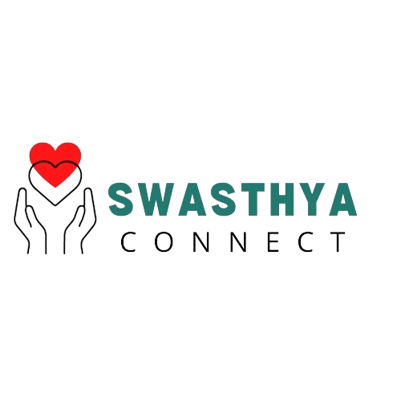

"Thank you for your interest in volunteering at our hospital through Swasthya Connect. Your support makes a significant difference!" conveys gratitude and emphasizes the importance of individuals who express interest in contributing their time and effort to the hospital through the Swasthya Connect.
Swasthya Connect is a platform that connects passionate individuals with opportunities to volunteer at our hospital. We believe in the power of community service and the positive impact it can have on healthcare.
Explore the various opportunities available for volunteering at our hospital. Whether you're interested in patient care, administration, or community outreach, we have a place for you.

If you are interested in becoming a volunteer, please fill out the application form below:
Click Here to Apply
If you have any questions or need further information, feel free to reach out to us:
Email: info@swasthyaconnect.org
Phone: +123 456 7890
Twitter: @SwasthyaConnect